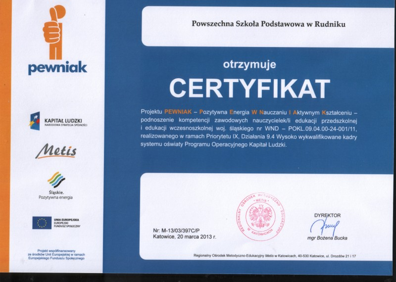

Nauczycielki z naszej szkoły brały udział w doskonaleniu zawodowym nauczycieli związanych z realizacją Projektu PEWNIAK - Pozytywna Energia W Nauczaniu I Aktywnym Kształceniu - podnoszenie kompetencji zawodowych nauczycielek/li edukacji przedszkolnej i edukacji wczesnoszkolnej województwa śląskiego nr WND-POKL.09.04.00-24-001/11 realizowanego w ramach Priorytetu IX, działania 9.4 Wysoko wykwalifikowane kadry systemu oświaty Programu Operacyjnego Kapitał Ludzki.
Uczestnicy projektu w naszej szkole:
mgr Katarzyna Czendlik
mgr Beata Starzyk